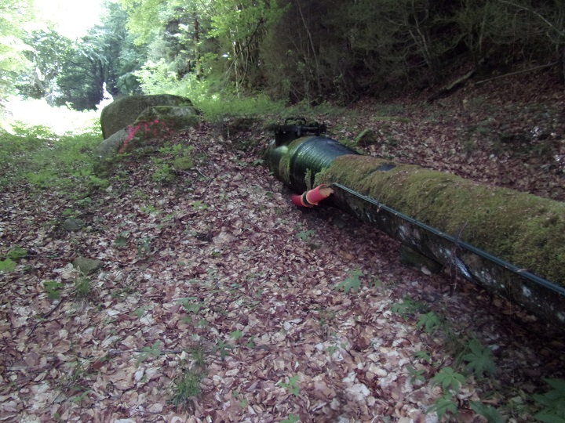

En prolongation des Gorges de Saint-Georges en venant de Saint Martin Lys, s'élève la route longeant ce petit affluant de l'Aude qu'est l'Ayguette (ou Aiguette ou Guette...). Cette route départementale n° 17 a gardé son n° depuis l'époque napoléonienne où la route de Quillan à Roquefort de Sault, passant par la Pierre-Lys, a été classée. (J'essaierai ultérieurement d'en faire son historique sur cette partie partant du Cap de Bouc).
Dans un premier temps (dans cette version brouillon), je vais d'abord déposer dans cette page les photos de cette route accrochée à la montagne (à compléter), de Sainte Colombe sur Guette et de Counozouls : les seuls village arrosés par l'Ayguette.

Ayguette, départementale 17 au Cap de Bouc

Ayguette, vue de la route suivant l'Aude depuis la départementale 17 au Cap de Bouc


Usine hydroélectrique de Nantilla, vue depuis la départementale 17 au Cap de Bouc

Canalisation alimentant l'Usine hydroélectrique de Nantilla
Ce sont ces carrières qui ont alimenté longtemps l'usine de dolomie de la gare de Saint Martin Lys.


Sainte Colombe sur Guette - Carrières de dolomie rive gauche et droite de l'Ayguette avant d'arriver au village

Chariot minier à l'entrée de Sainte Colombe, souvenir de l'activité minière du village (beaucoup moins fleuri qu'il ne l'a été...)


Promenade dans le charmant village de Ste Colombe
Nous quittons la départementale N° 17 juste avant d'arriver à Roquefort de Sault (pour une autre fois...) et prendre la route du col de Jau, l'ancienne route des contrebandiers
Directement visible depuis la départementale 84 du col de Jau, le menhir nous montre la direction du village de Counozouls, c'est le plus grand menhir du sud de la France avec ses plus de 8 mètres de haut.


Grand menhir de Counozouls)

La route D85 entre le parking et le menhir

Départ du chemin vers Roquefort de Sault depuis le parking


le chemin passe sur ce pont pour traverser l'Aiguette


Le lavoir fermé, sert aujourd'hui de salle d'exposition pour l'association Font Ronda qui présente plusieurs panneaux sur l'histoire et les activités de Counozouls

Panneau commémoratif de la "commune libre" de Counozouls placé sur la mairie, rappelle quand la commune s'est révoltée contre les prétentions des propriétaires terriens qui remettaient en cause les droits d'usage des villageois


le grand menhir depuis la route
Pont sur l'Aiguette au croisement de la D85 et de la route vers Counozouls

Counozouls vu depuis la D85

Les pierres de granit du bord de la route
Le parcours décrit autour de Counozouls suit une partie du chemin bleu
Les cascades de l'Ayguette sont un site naturel inscrit de l'Aude
Le point qui me parait le plus interessant et le plus facile d'accès est celui du pont au Courtal den Cauneille, pont qui permet à la D85 de passer de la rive gauche à la rive droite de l'Ayguette

La cascade de l'Ayguette au pont du Courtal den Cauneille
d'autres cascades ou rapide sur la zone
de nombreux magnifiques hêtres plus que centenaires en proximité du cours d'eau
Une prise d'eau et la canalisation qui en part amène l'eau de l'Ayguette à une centrale électrique en contre bas - contruite avant ou après l'inscription du site en site naturel ?